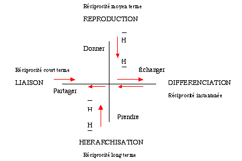
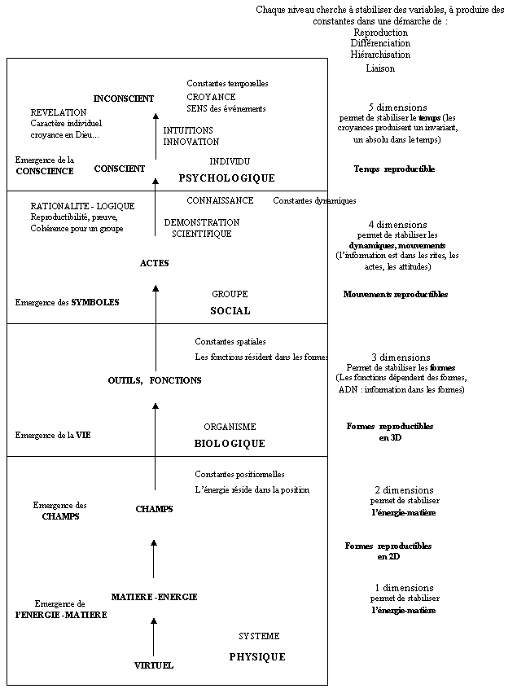

LE DEVELOPPEMENT COMPLEXE
Partie 1: Base du concept
La science des systèmes ne prétend pas être directement productrice de modèles achevés, qu'il s'agisse de modèle d'action ou de modèles de compréhension de la complexité. Se définissant plus par son projet que par son objet, elle revendique un statut méthodologique différent de celui des autres sciences. Définie comme étant une méthode constructiviste, à l'image des caractéristiques émergeante des systèmes qu'elle décrit, la systémique est, dans ses racines, la science de la complexité.
Un systèmes est un objet complexe, formés de composants distincts reliés entre eux par un certains nombre de relations. Les composants sont considérés comme des sous-systèmes, ce qui signifie qu'ils entrent dans la même catégorie d'entités que les ensembles auxquels ils appartiennent. Le système possède un degré de complexité plus grand que ses parties et irréductible à celle de ses composantes. L'évolution des systèmes est conditionnée à la fois par les modifications internes qui peuvent affecter les composantes ou les relations définissantes, et par les interactions qui peuvent s'établir entre le système et son environnement. Au cours de son évolution, un système peut conserver une certaine stabilité ; il peut aussi se transformer soit dans le sens de la désagrégations, soit dans le sens d'une plus haute intégration.
Fort de ces fondements de la systémique, nous avons proposés plusieurs axiomes :
- Quatre opérateurs sont suffisants pour décrie l'ensemble des interactions entre les éléments d'un système. Quatre opérateurs inverses leur sont associés.
- Les niveaux systémiques (physique, biologique, social, psychologique) sont en relation avec les dimensions spatiales que le système produit et dans lequel il construit son capital.
- Les quatres opérateurs sont reliés entre eux par des fonctions définies, de sorte qu'il existe une logique évolutive pour l'évolution complexe (minimisation des contraintes temporelles, réaction en chaîne complexe).
Les quatres opérateurs sont la reproduction, la différenciation, la hiérarchisation et la liaison.
La reproduction est une production d'identité. Elle se manifeste par des flux unidirectionnels de la haute vers la basse hiérarchie (éducation, formation�). La réciprocité se réalise d'une part de manière décalée dans le temps et, d'autre part, entre des éléments différents. Ainsi, je donne à mes enfants, alors que j'ai reçu de mes parents et que mes petits enfants recevront de mes enfants. Le temps et l'objet du flux sont différents. Dans un système qui se complexifie, la valeur de ces flux est croissante avec le temps. Précisons d'emblée que nous parlons ici de "forme pur" d'interaction pur qui n'existe pas dans la réalité, car la réalité est toujours un mélange des quatre catégories que nous avons défini.
La différenciation est une production de différence. Elle est crée par des flux à réciprocité instantanée. (échange économique).
La hiérarchisation est une production d'organisation. Elle est crée par des flux unidirectionnels de la basse vers la haute hiérarchie. La réciprocité tend vers l'infini puisque la hiérarchie se modifie sur un très long terme. Chaque individu à l'espoir d'une vie meilleure, d'une position hiérarchique plus haute. Herbert Simon propose qu'un système complexe ne peut être que hiérarchique.
La liaison est une production de lien. Elle est crée par des flux à réciprocité différée dans le temps. Elle peut se faire entre deux éléments (nous sommes amis), mais aussi entre plusieurs éléments (ton ami est mon ami). A donne à B qui donne à C qui donne A. La liaison est une alternance continue de rapport hiérarchique mais qui globalement dans le temps s'annule. Celui qui donne est en position dominante alors que celui qui reçoit, est en position dominée. Dans le niveau social, la liaison correspond à ce que Marcel Mauss décrit sous les termes de don et de contre-don.

L'observation des opérateurs dans les nombreux domaines de la connaissance nous a permis de définir ces quatre opérateurs de base que nous venons de décrire, et auxquels peuvent être réduits l'ensemble des opérateurs.
Ces opérateurs peuvent être caractérisé par la temporalité dans la réciprocité de leur échange. Ainsi, l'échange ( flux économiques) qui caractérise la différenciation est à réciprocité instantannée. La liaison (flux sociaux) à une réciprocité à court terme. La reproduction, avec ses flux de type éducatifs, eà une réciprocité à moyenne terme et les flux hiérarchiques ont une réciprocité à long terme.
En physique, on peut caractériser les quatre forces fondamentales, vecteur des interactions par l'intermédiaire des particules élémentaires , par la typologie des interactions proposée dans ce travail. L'interaction forte, responsable des liaisons des quarks au sein du noyau atomique par les gluons, est caractérisée par une augmentation de la force en fonction de la distance des quarks. L'interaction reproductive recouvre les mêmes caractéristiques. Plus un élément possède une identité forte dans un système plus sa hiérarchie est haute dans ce système. Les éléments qui dévient par rapport à l'identité d'un système ont une hiérarchie plus basse. Ils sont ramenés ou maintenu dans le système par des flux de type éducatifs (redistribution). La force électro-magnétique responsable des interactions inter-atomiques et des électrons sur les noyaux, par l'intermédiaire des photons, est de type différenciation. Les polarités opposées s'attirent, de sortent que le flux est de type complémentaire. L'interaction faible, responsable de la désintégration b, par l'intermédiaire des bosons électrofaibles, est de type hiérarchique. Elle ne s'applique qu'aux particules de spin gauche. L'interaction gravitationnelle, portée par des hypothétiques gravitons, à une portée infinie. Elle à des caractéristiques de type liante car plus elle est proche, plus la force est importante.
Les systèmes chimiques sont très complexes et variés en raison de la grande diversité des niveaux d'énergie. Pour simplifier, les chimistes classifient les interactions (liaisons) en plusieurs catégories qui n'existent que pour les besoins de l'analyse . L'interaction ionique est le produit du partage de charges positives et négatives (lien et différenciation car chaque atome reste différent en raison de sa polarité, mais est lié électrostatiquement). La liaison covalente est le partage en valeur égale d'un électron pour deux atomes (lien). La réaction d'oxydo-réduction, est un transfert d'électron (hiérarchie). Les réactions de catalyses active (ATP, ADP) ou passive permettent la reproduction des formes chimiques moins probables (reproduction). Elle crée un environnement favorable à l'interaction, de la même manière que l'interaction forte est expliquée par les effets d'écrans et de camouflage, c'est-à-dire par la structure de l'environnement des particules.
C'est certainement en biologie, que les exemples seront le plus nombreux. Tout les êtres vivants peuvent être décrit par trois grands modèles ; le modèle phylogénétique capacité à évoluer (différenciation), le modèle ontogénétique, capacité à se reproduire (reproduction) et le modèle épigénétique, capacité à l'apprentissage (hiérarchie). La notion d'être vivant est un modèle systémique qui implique une cohérence et un lien entre les éléments (liaison).
Dans le domaine social, la notion de systèmes que nous utilisons ici est proche de la notion d'" unité active " utilisée dans une théorie générale de l'action appliquée aux relations internationales et qui est basée sur deux éléments fondamentaux ; la culture (reproduction) et l'organisation (hiérarchie) . Talcott Parsons, dans son essai sur l'élaboration d'une théorie générale de la société avec une approche structuro-fonctionaliste, a proposé quatre fonctions pour décrire la dynamique des systèmes ; Une fonction de stabilité normative (reproduction), Une fonction d'intégration qui coordonne les éléments du système (hiérarchie), une fonction de poursuite des buts (liaison, cohérence) et enfin une fonction d'adaptation (différenciation) .
En mathématique, la transformation du boulanger, généralisation de l'application de Bernoulli, est un modèle mathématique caractéristique de nombreux systèmes dynamique réels, notamment parce qu'elle intègre le chaoticité (propriétés : inversible, réversible par rapport au temps, déterministe, récurrente et chaotique) . Pour effectuer la transformation, on pratique un étirement (différenciation : l'ordre est conservé alors que les distances sont modifiées), un pliage (hiérarchie : l'ordre est modifié) et un collage (liaison : l'objet redevient un tout cohérent). La phase de reproduction est assumée par le mathématicien qui utilise cette transformation.
En psychologie, le groupe de Klein permet de rendre compte de nombreuses conduites humaines. Jean Piaget l'utilise sous le nom de groupe INRC afin de définir la structure mentale par les quatre transformations suivantes : I :identique (reproduction), N : inverse ou négation (hiérarchie), R : réciproque (différenciation, échange réciproque), C : corrélative (lien, degré de dépendance, de cohésion).
En systémique, Joël De Rosnay décrit la naissance d'une organisation complexe et de sa trajectoire en spirale qui, à chaque cycle, rajoute un degré de complexité . Le point de départ est une population capable de se reproduire (Reproduction).Les interaction chaotiques conduisent à une grande variété de structures (différenciation). Des boucles de rétroactions positives et des catalyses (autocatalyses) permettent l'établissement de cycles se bouclant sur eux-mêmes. La complémentarité des éléments des cycles est caractéristique de la différenciation (différenciation et échange) L'autocatalyse conduit à l'autosélection des systèmes les mieux adapté par une brisure de symétrie fonctionnelle (hiérarchie). Enfin, des symbioses se créent par coévolution avec d'autres organismes (lien). La mémorisation des structures et des mécanismes reproductifs et évolutif correspond à la production de son identité et de sa capacité à l'autoreproduction. Tel est la description des phases essentielles à l'émergence de la complexité.
Les systèmes que l'on identifie de manière intuitive, en général en raison des frontières qu'ils possèdent, ne sont pas forcément des systèmes dynamiques. Pour qu'ils soient considérés comme systèmes dynamiques, ils doivent avoir la propriété d'autonomie évolutive. Pour cela il doit exister les quatre types d'interactions entre les éléments qui constituent le système.
Il existe plusieurs niveaux systémiques dans notre environnement. Nous les identifions aisément de manière intuitive (physique, biologique, social et psychologique). Chaque niveau semble lié à une dimension de l'espace. En ce qui concerne la physique, dans les récentes théories cosmologiques, les dimensions qui nous semblent invariantes et immuables, tel un capital que la nature nous confie (le temps, l'espace et la matière), ont peut-être émergées au cours de l'événement fondateur de notre univers. Alors qu'une lente érosion entropique agrandi les dimensions de l'espace et du temps en raison de l'expansion de l'univers, comme si elle diluait la matière dans l'espace et les événements dans le temps (l'énergie se transforme en matière inerte et homogène, les distances de l'univers s'agrandissent, le temps de l'univers augmente), la complexité freine cette évolution en produisant des capitaux qui font évoluer les systèmes en contractant les dimensions de l'univers. Ainsi, l'observation bien qu'encore indirect, des trous noirs sous l'action de la gravité, des naines blanches ou des étoiles à neutrons, permet la production de jeunes particules élémentaires. La présence des quatre forces fondamentales permet à un système physique de produire une dynamique systémique, génératrice de complexité, même dans un univers qui globalement semble vieillir.
Les systèmes biologiques, à la différence des systèmes physiques, fixent leurs informations (gènes) et leurs fonctions (anatomie, structures des protéines,�) dans des structures spatiales à trois dimensions. Alors que l'entropie disperse les éléments dans l'espace, la complexité les concentrent (capital biologique) en structurant des éléments physiques dans une dynamique à trois dimensions.
La dynamique sociale suit la même logique en y intégrant la dimension du temps. Le temps s'écoule fatalement sans que l'on puisse le retenir. Elle dilue les événements, les éloignent les uns des autres, car le principe d'incertitude et la choacité des phénomènes ne permettent pas de reconstitution infiniment précise, ni infiniment lointaine. Les incertitudes de la réalité des phénomènes s'accumulent avec le temps. La dynamique complexe a permis l'émergence des symboles dans le niveau social Ils permettent de figer le temps par une explication symbolique (statique, réduction symbolique logique) que l'on reproduit à travers le rite symbolique (dynamique). La complexité sociale permet ainsi le processus de recherche, action et évaluation en voyageant dans le temps par des aller-retour entre le futur, le présent et le passé.
Enfin, la dimension psychologique ou spirituelle, pourrait être une dynamique complexe de la dimension des échelles, telle que la développe L. Nottale . La résolution est la variable d'échelle. Les expériences psychologiques ou spirituelles (paranormales, psychanalitiques,�) violent apparemment (cela dépend du référentiel dans lequel on se place) les logiques temporelles, les logiques biologiques et les logiques physiques ? La complexité d'échelle est à la fois ancrée dans la matière , dans la vie et dans le rite social ? La complexité de ce niveau pourrait être, par extension à la réflexion sur les autres niveaux, la contraction des échelles et des dimensions qui le sous-tendent. Alors que l'entropie cherche à les dissocier, à les mettre en compétition, la complexité cherche à les associer, à les intégrer. La dynamique systémique peut donc évoluer et se complexifier au sein d'un niveau. C'est la systémique classique qui va ainsi étudier par exemple les systèmes sociaux et leur imbrication (individu social famille, entreprise, état,�).
La complexité du monde s'est structurée en plusieurs niveaux. Nous distinguons, pour l'analyse, le niveau physique, le niveau biologique le niveau social et le niveau psychologique. Chacun de ces niveaux peut faire l'objet d'une analyse complexe.
La description des systèmes physiques peut se ramener à une description dans un espace à une (1D) et à deux dimensions (2D). Dans la première dimension, on cherche à connaître l'interaction entre deux éléments virtuels. L'énergie (ou la masse) est une mesure utilisée pour définir ce niveau physique. Elle est la mesure d'une position, position entre deux particules l'une par rapport à l'autre (liaison), d'une particule dans un champ de force (énergie potentielle), d'une particule dans un champ temporel (énergie cinétique). Le deuxième niveau (2D) mesure les champs, c'est-à-dire des hétérogénéhités dans un espace avec un minimum de deux dimensions. La notion de champs peut évidement s'étendre à toutes les autres dimentions de la nature.
Les systèmes biologiques ont une dynamique qui se déroule dans un espace à 3D. En effet, les systèmes biologiques permettent de reproduirent (différencier, organiser et lier) des formes. (Action des protéines grâces à leur configuration tridimensionnelle, la fonctionnalité biologique dépend des formes, la mémoire génétique est inscrite dans un espace de complémentarité spatial, etc.). L'émergence des systèmes biologiques est la vie. L'analyse de ces systèmes se fait par une connaissance des formes, des volumes, de l'espace vital, des fonctions des organes, des fonctions des protéines, des fonctions des outils, etc. Les indicateurs sont donc l'utilité, la fonctionnalité, le travail dans le but de la production d'éléments en 3D. Les machines et l'homme en tant que force de travail sont de cette nature biologique . La dynamique biologique permet de mieux gérer la ressource de l'environnement que constitue le temps. En effet, les enzymes accélèrent les processus dans le temps, les outils permettent de travailler plus rapidement, un organe spécialisé permet d'effectuer une fonction plus rapidement, un environnement écologique stable évite la dégradation du temps. L'économie du temps est un critère de performance de sorte que l'on peut utiliser le temps comme unité de mesure. Les différentes interactions biologiques peuvent se mesurer en terme de temps d'interaction (temps d'interaction liante, temps d'interaction éducative, temps d'interaction diversifiant, temps d'interaction hiérarchique) pour définir une dynamique strictement biologique.
Les systèmes sociaux sont caractérisés par l'émergence des symboles. Les systèmes sociaux reproduisent, différencient et hiérarchisent des symboles. Les symboles, signes conventionnels réducteurs, représentent des variables à quatre dimensions (4D). Ils résument en effet des objets (3D) en mouvements (rites) ou tout autres éléments abstraits (théorie) mais qui fait appel en dernier ressort à des pratiques ou à des expériences pratiques. Les symboles permettent la description des processus, des dynamiques dans l'espace et le temps. Les volumes ont 3 dimensions de sorte que le mouvement de ces volumes dans le temps fait apparaître une quatrième dimension, le temps. L'utilité de la fonction des systèmes biologiques est la maîtrise de l'environnement biologique et physique. L'utilité des symboles est la maîtrise des processus spatio-temporels, par la connaissance. Les symboles peuvent être mesurés par leurs valeurs liées à leur caractère d'anticipation, d'explication. La croyance est justement le fait de penser que son système de valeur correspond à la réalité de l'environnement. En s'appuyant sur ce système de valeur, on peut anticiper et planifier l'avenir, donc intérioriser dans le système une variable qui était extérieur dans les systèmes biologique. La valeur des croyances n'a évidemment pas de sens dans l'absolu. En revanche, lorsque des systèmes échangent des éléments, c'est qu'ils ont une identité commune, un besoin commun, une échelle des valeurs commune. Ces systèmes définissent entre eux la valeur des éléments vecteurs des interactions. Cette valeur, dans le système social humain mondialisé est la valeur monétaire. Nous l'utiliserons ainsi comme équivalent des valeurs sociales.
Enfin, l'existence des systèmes psychologiques, liés aux individus introduit une cinquième dimension qui permet, non plus de maîtriser un temps invariant comme c'est le cas dans les systèmes sociaux, mais de rendre cette dimension variable (retour sur le passé, intuition sur l'avenir, etc.) à travers la dynamique fractale des échelles. Ce niveau est caractérisé par l'émergence de la croyance, c'est-à-dire d'un invariant temporel.
